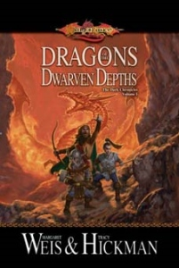
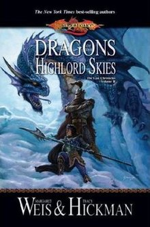
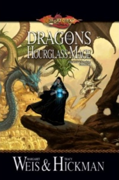

The Lost Chronicles
The Lost Chronicles were published between 2006-2009. They are the in-between books that help flesh out what is glossed over in the Chronicles series. Dragons of Dwarven Depths plays out between Dragons of Autumn Twilight and Dragons of Winter Night. Dragons of Highlord Skies details what happens with the companions who go to the frozen wasteland in the south. And Dragons of the Hourglass Mage help explain what happens to Raistlin between books Winter Night and Spring Dawning.
Dragons of Dwarven Depths
The companions escape Pax Tharkas after its run-in with the Red Dragon Army. Slowed down by the number of slaves and slave families the companions need to find a place of safety for their charges. They seek out the aide of the legendary mountain dwarf stronghold Thorbardin. It is their they are told that aide will be rendered if the Legendary Hammer of Kharas is returned to them. But unknown to the companions all is not as it seems in the mountain hold.
Dragons of the Highlord Skies
Flight from Tarsis has led Laurana and her group of companions to track down a Dragon Orb in the southern frozen wasteland at Icewall Castle. Kitiara the Highlord for the Blue Dragon Army is planning to wrestle away leadership from Emperor Ariakas with assistance from the mysterious and dangerous death knight Lord Soth. Once the companions reach the lands around Icewall Castle there they must face off against the White Dragon Army leader Feal-Thas.
Dragons of the Hourglass Mage
After Raistlin made his decision to become a black robe mage he journeys to Neraka the center of power for Takhisis and her armies. He seeks his own rise to power and therefor lies and manipulates his way into her army. Realizing the Dark Queen plans to seize all magic under her control Raistlin plots to disrupt her plans. Kitiara receives orders from her dark mistress to lay a trap for the gods of magic in the Night Eye.